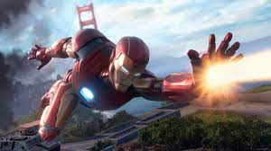
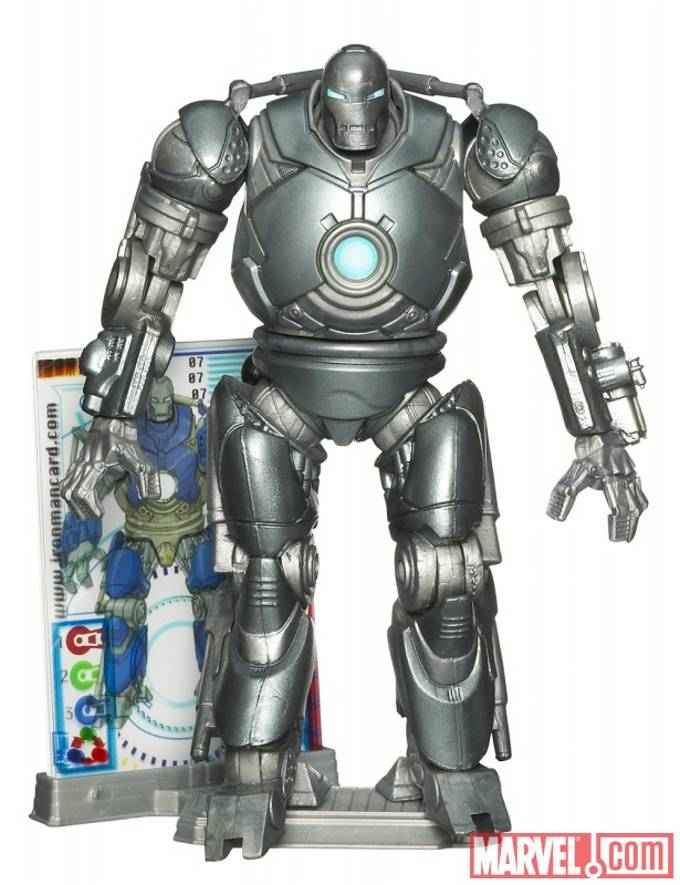
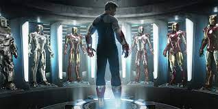
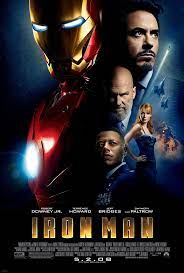

Ironman
Poderes
Enemigos
Trajes
Peliculas




Superfuerza
Durabilidad
Resistencia por armadura
Vuelo supersonico
Whiplash
Titanio
Loki
Thanos
Mark I-Iron Man (2008)
Mark II-Iron Man (2008)
Mark III -Iron Man (2008)
Mark IV-Iron Man 2 (2010)